Inteligencia Artificial
German Braun
Introducción
Created: 2024-08-12 lun 18:06
¿Que es IA?
¿Qué es Inteligencia?
´ ¿Que atributos le pedimos a un ente para sea inteligente? Escucho
¿Qué es Inteligencia?
Diccionario de la Real Academia Española:
- Habilidad, destreza y experiencia.
- Capacidad de entender o comprender.
- Conocimiento, comprensión, acto de entender.
- Capacidad de resolver problemas.
Las definiciones tienen que ver con las ideas de aprender y de resolver problemas.
Definiciones de IA
Sistemas que:
| Humano | Racional | |
|---|---|---|
| Procesos mentales de razonamiento | piensan como humanos | piensan racionalmente |
| Conducta | actúan como humanos | actúan racionalmente |
Definiciones de IA
Sistemas que:
| Humano | Racional | |
|---|---|---|
| Procesos mentales de razonamiento | piensan como humanos | piensan racionalmente |
| Conducta | actúan como humanos | actúan racionalmente |
Pensando humanamente: Enfoque del modelamiento cognitivo
Requiere teorías científicas de las actividades internas del cerebro
- ¿Cómo pensamos los humanos?
- ¿Cuál es la naturaleza de nuestra inteligencia y cómo funciona?
Para analizar si una máquina piensa como un humano, tenemos que determinar cómo piensan los humanos:
- Introspección
- Experimentos Psicológicos
- Imágenes del cerebro
Pensando humanamente: Enfoque del modelamiento cognitivo
Ciencias Cognitivas
Brinda modelos de Inteligencia Artificial y técnicas experimentales de la Psicología para construir y testear teorías de la mente humana.
Definiciones de IA
Sistemas que:
| Humano | Racional | |
|---|---|---|
| Procesos mentales de razonamiento | piensan como humanos | piensan racionalmente |
| Conducta | actúan como humanos | actúan racionalmente |
Pensando racionalmente: Leyes del Pensamiento
Silogismos de Aristóteles
¿Cuáles son los procesos correctos de argumentación y pensamiento?
Varias escuelas Griegas desarrollaron varias formas de lógica: notación y reglas de derivación para los pensamientos. Mecanización.
Pensando racionalmente: Leyes del Pensamiento
Lógicos del siglo XIX desarrollaron notacióon precisa de sentencias y de las relaciones entre ellas.
Problema
No todo el comportamiento inteligente es producido por deliberación lógica.
Definiciones de IA
Sistemas que:
| Humano | Racional | |
|---|---|---|
| Procesos mentales de razonamiento | piensan como humanos | piensan racionalmente |
| Conducta | actúan como humanos | actúan racionalmente |
Actuando humanamente: El test de Turing
El modelo es el hombre; el objetivo es construir un sistema que pase por humano
| Matemático inglés. Marcó el comienzo de la Teoría de la Computación. También fue pionero de la Inteligencia Artificial | Juego de Imitación  Alan Turing (1912-1954) Alan Turing (1912-1954) |
Actuando humanamente: El test de Turing en el cine
 |
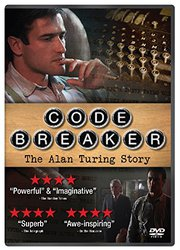 |
|---|---|
 |
 |
Actuando humanamente: El test de Turing
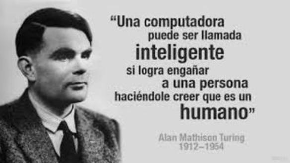
En 1950, A. Turing publicó "Computing machinery and intelligence"
Actuando humanamente: El test de Turing
``Can machines think?'' \(\longrightarrow\) ``Can machines behave intelligently?''
Propone un Test Operacional para el funcionamiento inteligente: El Juego de la Imitación
Capacidades necesarias:
- procesamiento del lenguaje natural
- representación del conocimiento
- razonamiento
- aprendizaje
Actuando humanamente: El test de Turing
El Juego de la Imitación
- El Test consiste en un juez realizando preguntas a dos participantes (X e Y) que no puede ver: un hombre y una mujer.
- El juez debe averiguar, por medio de preguntas, quién es el hombre y quién la mujer. Los participantes pueden mentir o tratar de engañar al juez.
Actuando humanamente: El test de Turing
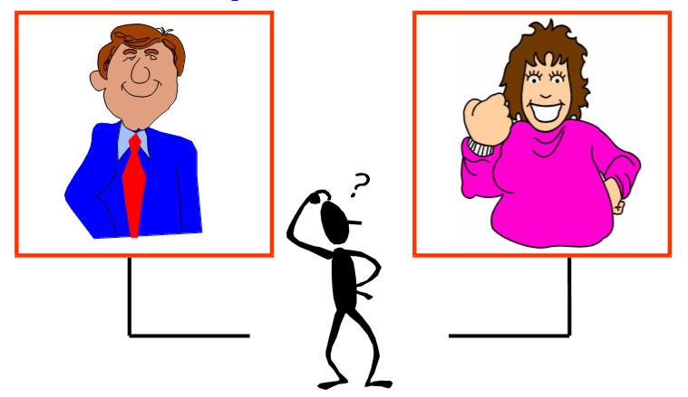
Actuando humanamente: El test de Turing
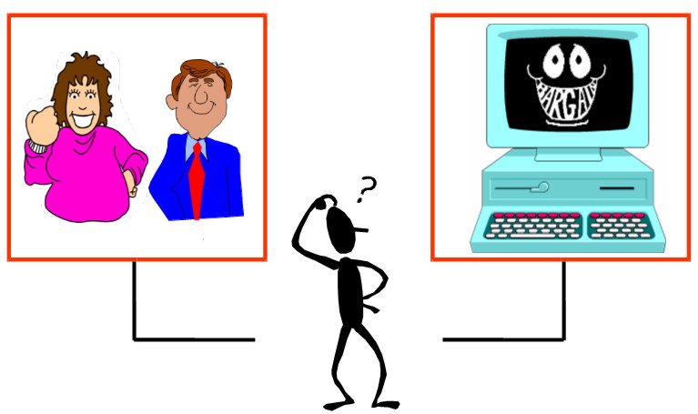
Actuando humanamente: El test de Turing

Actuando humanamente: El test de Turing
En 1950, A. Turing publicó "Computing machinery and intelligence"
En su trabajo:
- Anticipó los argumentos contra AI en los siguientes 50 años
- Sugirió los principales componentes de AI: Conocimiento, razonamiento, entendimiento del lenguaje, aprendizaje
El test de Turing: Objeciones
| El pensamiento es una función del alma inmortal del ser humano. Dios ha dado un alma a cada ser humano, pero no a los animales o a las máquinas. Luego, ningún animal o máquina puede pensar. | Objeción Teológica |
Religiones que consideran que los animales tienen alma y otras que las mujeres no la tienen. No restringe la omnipotencia de Dios.
El test de Turing: Objeciones
| Las consecuencias del hecho de que las máquinas pensaran podrían ser espantosas. Esperamos y creemos que no puedan hacerlo. | Objeción del Avestruz |
El test de Turing: Objeciones
| Existen varios resultados de la lógica matemática que podrían ser utilizados para mostrar que existen limitaciones en el poder de las máquinas de estados discretos. Luego, existen preguntas que las máquinas no podrán responder. | Objeción Matemática 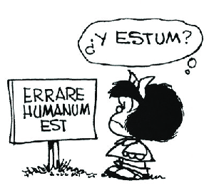 |
El test de Turing: Objeciones
| Hasta que una máquina no sepa escribir un soneto o componer un concierto con base en los pensamientos y las emociones que siente, y no a consecuencia de la caída venturosa de símbolos, no podremos estar de acuerdo en que la máquina pueda ser igual que un cerebro, es decir, que no solamente sepa escribirlos, sino también que sepa que los ha escrito. | Obejción de la Conciencia 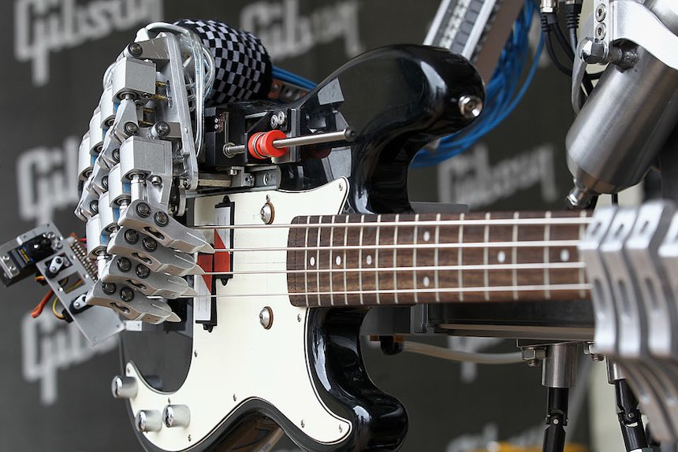 |
La única forma de estar seguro que una persona piensa es siendo esa persona y sentir lo que ella siente.
El test de Turing: Objeciones
Mas Objeciónes …
Leer el paper completo …
El test de Turing: Estado del Arte
Premio Loebner
 |
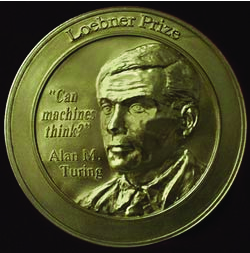 |
El test de Turing: Estado del Arte
Los premios para cada año son:
- Medalla de bronce. En 2016 el primer premio ascendió a $4.000, el segundo a $1.500, el tercero a $1.000 y el cuarto a $500.
- Medalla de plata, y $25.000 para el primer programa que los jueces no puedan distinguir de un ser humano verdadero en un Test de Turing sólo con texto, y que pueda convencer a los jueces de que la otra entidad (el humano) que también está hablando es, a su vez, una computadora. Este premio se otorgará una sola vez, y aún no ha sido concedido.
- Medalla de oro y $100.000 para el primer programa que los jueces no puedan distinguir de un ser humano verdadero en un Test de Turing, que incluya descifrar y la comprensión del texto, con entradas visual y auditiva. Este premio se otorgará una sola vez, y aún no ha sido concedido.
El Premio Loebner se disolverá una vez que el premio de 100.000 dólares, con la medalla de oro, sea adjudicado.
El test de Turing: Estado del Arte
- 2012: Mohan Embar
- 2013: Stephen Worswick
- 2014: 1º Rose 1 - 2º Izar 2.25 - 3º Uberbot 3.25 Mitsuku - Rank 3.5 ($500)
- 2015: Mitsuku 83.33% - Lisa 80.00% - Izar 76.67% - Rose 75.00% Y quedó: 1º Rose 1.5 - 2º Mitsuku 2.0 - 3º Izar 3.25 - 3º Lisa - 3.25
- 2016: Mitsuku 90 - Tutor 78.33333 - Rose 77.5 - Arckon 77.5
El test de Turing: Aplicaciones
CAPTHCHA
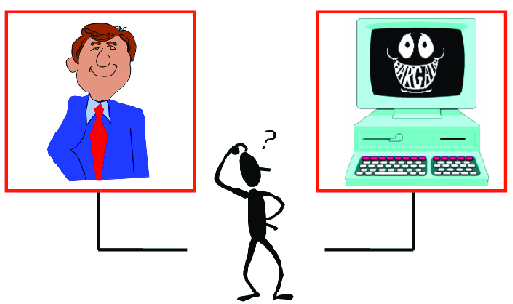
El test de Turing: Aplicaciones
| CAPTHCHA 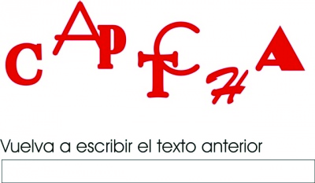 | Acrónimo de Completely Automated Public Turing test to tell Computers and Humans Apart - Prueba de Turing pública y automática para diferenciar máquinas y humanos. |
El test de Turing: Aplicaciones
CAPTHCHA
| 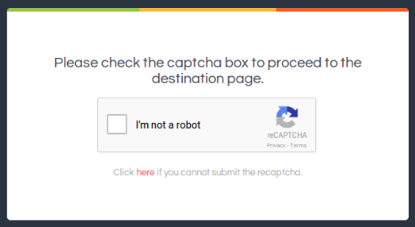 |
Definiciones de IA
Sistemas que:
| Humano | Racional | |
|---|---|---|
| Procesos mentales de razonamiento | piensan como humanos | piensan racionalmente |
| Conducta | actúan como humanos | actúan racionalmente |
Actuando racionalmente
Comportamiento Racional
Realizar la acción correcta.
Acción correcta aquello que se espera maximice la meta a alcanzar, dada la información disponible.
Actuando racionalmente
Comportamiento Racional
Realizar la acción correcta.
Actuando racionalmente
Comportamiento Racional
Realizar la acción correcta.

Agentes
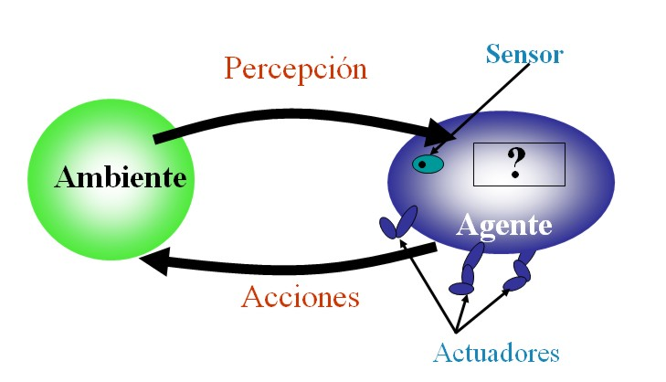
¿Ejemplos?
Agentes racionales
Un agente es una entidad que percibe y actúa.
Abstractamente, un agente es una función desde historias de percepciones a acciones:
$$f: {\cal P}^* \to {\cal A}$$
Para toda clase de ambientes y tareas, buscamos el agente con la mejor perfomance.
Disciplinas que contribuyen con la IA
- Filosofía: Lógica, métodos de razonamiento, mente como sistema físico, fundamentos del aprendizaje, lenguaje, racionalidad.
- Matemáticas: Representación formal y prueba, algoritmos, computación, decidibilidad, tratabilidad, probabilidad.
- Psicología: Adaptación, fenómenos de percepción y control, técnicas experimentales.
Disciplinas que contribuyen con la IA
- Neurociencia: Procesamiento de la información en el cerebro. Redes Neuronales.
- Economía: Teoría formal de decisiones racionales.
- Linguística: Representación del conocimiento, gramáticas.
- Ingeniería de las Computadoras: Construcción de computadoras eficientes.
Referencia Bibliográfica
- S. Russell y P.Norvig Artificial Intelligence: A Modern Approach (Third Edition) Capítulo 1 2009
- Alan Turing Computing Machinery and Intelligence Mind 59